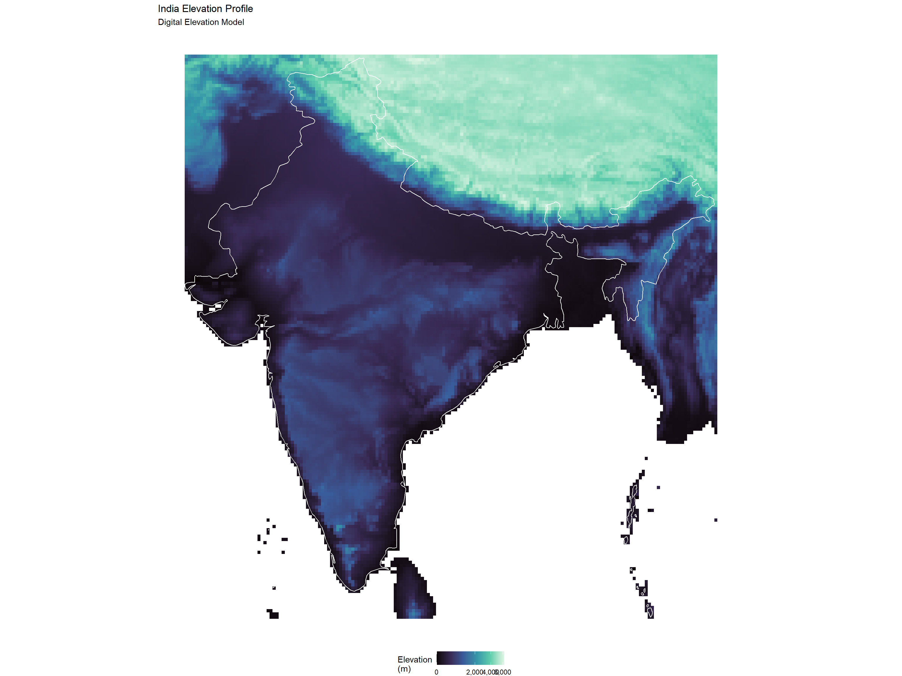

knitr::opts_chunk$set(echo = TRUE, warning = FALSE, message = FALSE)
# Load configuration and data
config <- readRDS("data/enhanced_config.rds")
enhanced_dataset <- readRDS("data/processed/complete_enhanced_dataset.rds")
performance_monitor <- readRDS("data/processed/performance_monitor.rds")
# Load required packages
library(terra)
library(sf)
library(ggplot2)
library(dplyr)
library(rnaturalearth)
library(cowplot)
library(viridis)
library(stars)4 Enhanced Regional Processing and Spatial Downscaling
5 Enhanced Regional Climate Processing with Downscaling
This document implements advanced regional processing including spatial downscaling, topographic corrections, and high-resolution climate mapping for India.
5.1 Setup
5.2 Enhanced India Boundary Processing
# Get high-resolution India boundaries
asia_sf <- rnaturalearth::ne_countries(
continent = "Asia",
returnclass = "sf",
scale = "medium"
)
india_sf <- asia_sf[asia_sf$sovereignt == "India", ]
if (nrow(india_sf) == 0) {
stop("India boundary not found in Asia boundaries")
}
# Now india_sf is an sf object with India boundaries.
# You can then apply st_buffer and other operations safely.
india_buffer <- sf::st_buffer(india_sf, dist = 2)
cat("India boundaries processed\n")India boundaries processedcat("India extent:", as.character(st_bbox(india_sf)), "\n")India extent: 68.1650390625 6.74868164062499 97.3435546875 35.4958984375 5.3 Crop Climate Data to India Region
# Function to crop climate data to India region
crop_to_india <- function(climate_data_list, boundary_sf) {
cropped_data <- list()
for(var_name in names(climate_data_list)) {
if(is.null(climate_data_list[[var_name]])) {
cat(paste("Skipping", var_name, "- data not available\n"))
next
}
cat(paste("Cropping", var_name, "to India region...\n"))
tryCatch({
# Convert sf to SpatVector for terra
boundary_vect <- vect(boundary_sf)
# Crop raster to boundary
cropped <- crop(climate_data_list[[var_name]], boundary_vect)
# Mask to exact boundary (optional - can be slow)
# cropped <- mask(cropped, boundary_vect)
cropped_data[[var_name]] <- cropped
cat(paste("Successfully cropped", var_name, "\n"))
}, error = function(e) {
cat(paste("Error cropping", var_name, ":", e$message, "\n"))
cropped_data[[var_name]] <- NULL
})
}
return(cropped_data)
}
# Crop all climate data to India
india_climate_data <- crop_to_india(enhanced_dataset$all_data, india_buffer)
cat("Regional cropping completed\n")Regional cropping completedcat("Variables cropped to India:", length(india_climate_data), "\n")Variables cropped to India: 0 performance_monitor$log_performance("regional_cropping")Step: regional_cropping - Memory: 1.03 MB - Elapsed: 0.56 min5.4 Topographic Corrections and Elevation Processing
# Download and process elevation data for India
get_elevation_data <- function(boundary_sf) {
tryCatch({
# Download elevation data using geodata
cat("Downloading elevation data for India...\n")
# Get elevation data at same resolution as climate data
elev_data <- geodata::elevation_global(
res = config$climate_resolution,
path = file.path(config$data_dir, "raw")
)
# Crop to India region
boundary_vect <- vect(boundary_sf)
elev_india <- crop(elev_data, boundary_vect)
cat("Elevation data processed successfully\n")
return(elev_india)
}, error = function(e) {
cat("Elevation download failed:", e$message, "\n")
return(NULL)
})
}
# Get elevation data
india_elevation <- get_elevation_data(india_buffer)Downloading elevation data for India...
Elevation data processed successfully# Apply topographic corrections to temperature data
apply_topographic_correction <- function(temp_data, elevation_data, lapse_rate = -0.0065) {
if(is.null(elevation_data) || is.null(temp_data)) {
cat("Elevation or temperature data not available for topographic correction\n")
return(temp_data)
}
cat("Applying topographic corrections...\n")
tryCatch({
# Resample elevation to match temperature data resolution
elev_resampled <- resample(elevation_data, temp_data, method = "bilinear")
# Apply lapse rate correction
# Assume sea level reference, apply standard atmospheric lapse rate
elevation_km <- elev_resampled / 1000 # Convert to kilometers
temp_correction <- elevation_km * lapse_rate * 1000 # Temperature adjustment
# Apply correction to all temperature layers
if(nlyr(temp_data) > 1) {
corrected_temp <- temp_data + temp_correction
} else {
corrected_temp <- temp_data + temp_correction
}
cat("Topographic correction applied\n")
return(corrected_temp)
}, error = function(e) {
cat("Topographic correction failed:", e$message, "\n")
return(temp_data)
})
}
# Apply topographic corrections to temperature variables
if("tavg" %in% names(india_climate_data)) {
india_climate_data$tavg_topo <- apply_topographic_correction(
india_climate_data$tavg,
india_elevation
)
}
if("tmin" %in% names(india_climate_data)) {
india_climate_data$tmin_topo <- apply_topographic_correction(
india_climate_data$tmin,
india_elevation
)
}
if("tmax" %in% names(india_climate_data)) {
india_climate_data$tmax_topo <- apply_topographic_correction(
india_climate_data$tmax,
india_elevation
)
}5.5 Enhanced Climate Zone Classification
# Advanced climate zone classification for India
classify_india_climate_zones <- function(temp_data, precip_data, elevation_data = NULL) {
if(is.null(temp_data) || is.null(precip_data)) {
cat("Temperature or precipitation data not available for climate classification\n")
return(NULL)
}
cat("Classifying climate zones for India...\n")
# Calculate annual values
temp_annual <- mean(temp_data, na.rm = TRUE)
precip_annual <- sum(precip_data, na.rm = TRUE)
# Temperature-based classification
temp_zones <- classify(temp_annual,
matrix(c(-Inf, 10, 1,
10, 18, 2,
18, 25, 3,
25, 30, 4,
30, Inf, 5), ncol = 3, byrow = TRUE),
include.lowest = TRUE)
# Precipitation-based classification
precip_zones <- classify(precip_annual,
matrix(c(-Inf, 500, 1,
500, 1000, 2,
1000, 2000, 3,
2000, 3000, 4,
3000, Inf, 5), ncol = 3, byrow = TRUE),
include.lowest = TRUE)
# Combined classification
climate_zones <- temp_zones * 10 + precip_zones
# Add elevation zones if available
if(!is.null(elevation_data)) {
elev_resampled <- resample(elevation_data, climate_zones, method = "bilinear")
elev_zones <- classify(elev_resampled,
matrix(c(-Inf, 500, 1,
500, 1500, 2,
1500, 3000, 3,
3000, Inf, 4), ncol = 3, byrow = TRUE),
include.lowest = TRUE)
climate_zones <- climate_zones * 10 + elev_zones
}
# Define climate zone names
zone_names <- c(
"Arid-Cold", "Arid-Cool", "Arid-Warm", "Arid-Hot", "Arid-Very Hot",
"Semi-Arid-Cold", "Semi-Arid-Cool", "Semi-Arid-Warm", "Semi-Arid-Hot", "Semi-Arid-Very Hot",
"Moderate-Cold", "Moderate-Cool", "Moderate-Warm", "Moderate-Hot", "Moderate-Very Hot",
"Humid-Cold", "Humid-Cool", "Humid-Warm", "Humid-Hot", "Humid-Very Hot",
"Very Humid-Cold", "Very Humid-Cool", "Very Humid-Warm", "Very Humid-Hot", "Very Humid-Very Hot"
)
# Add zone information
zones_df <- data.frame(
zone_id = values(climate_zones, na.rm = FALSE),
temperature = values(temp_annual, na.rm = FALSE),
precipitation = values(precip_annual, na.rm = FALSE)
) %>%
filter(!is.na(zone_id)) %>%
group_by(zone_id) %>%
summarise(
mean_temp = mean(temperature, na.rm = TRUE),
mean_precip = mean(precipitation, na.rm = TRUE),
area_cells = n(),
.groups = 'drop'
)
cat("Climate zones classified:", nrow(zones_df), "distinct zones\n")
return(list(
zones_raster = climate_zones,
zones_summary = zones_df,
temp_annual = temp_annual,
precip_annual = precip_annual
))
}
# Classify climate zones
india_climate_zones <- classify_india_climate_zones(
india_climate_data$tavg,
india_climate_data$prec,
india_elevation
)Temperature or precipitation data not available for climate classification5.6 Spatial Interpolation and Downscaling
# Enhanced spatial interpolation for gap filling
enhance_spatial_resolution <- function(climate_data, target_resolution = 5) {
cat("Enhancing spatial resolution through interpolation...\n")
enhanced_data <- list()
for(var_name in names(climate_data)) {
if(is.null(climate_data[[var_name]])) next
cat(paste("Processing", var_name, "...\n"))
tryCatch({
# Create higher resolution template
current_res <- res(climate_data[[var_name]])[1]
scale_factor <- current_res / (target_resolution / 60) # Convert arc-minutes to degrees
if(scale_factor <= 1) {
cat(paste("Skipping", var_name, "- already at target resolution\n"))
enhanced_data[[var_name]] <- climate_data[[var_name]]
next
}
# Resample to higher resolution using bilinear interpolation
enhanced <- disagg(climate_data[[var_name]],
fact = round(scale_factor),
method = "bilinear")
enhanced_data[[var_name]] <- enhanced
cat(paste("Enhanced resolution for", var_name, "\n"))
}, error = function(e) {
cat(paste("Enhancement failed for", var_name, ":", e$message, "\n"))
enhanced_data[[var_name]] <- climate_data[[var_name]]
})
}
return(enhanced_data)
}
# Apply spatial enhancement (optional - can be memory intensive)
if(config$processing$memory_limit == "8GB") {
cat("Applying spatial enhancement...\n")
enhanced_india_data <- enhance_spatial_resolution(india_climate_data, target_resolution = 5)
} else {
enhanced_india_data <- india_climate_data
}Applying spatial enhancement...
Enhancing spatial resolution through interpolation...5.7 Advanced Visualization Dashboard
# Create comprehensive India climate visualization
create_india_dashboard <- function(climate_data, climate_zones = NULL, elevation = NULL, boundary_sf = NULL) {
plots <- list()
# Temperature map
if("tavg" %in% names(climate_data)) {
temp_annual <- mean(climate_data$tavg, na.rm = TRUE)
temp_df <- as.data.frame(temp_annual, xy = TRUE)
colnames(temp_df)[3] <- "mean"
plots$temperature <- ggplot() +
geom_raster(data = temp_df, aes(x = x, y = y, fill = mean)) +
scale_fill_viridis_c(name = "Temp (°C)", option = "plasma") +
labs(title = "India Annual Mean Temperature",
subtitle = "WorldClim with Topographic Corrections") +
theme_void() +
theme(legend.position = "bottom")
if(!is.null(boundary_sf)) {
plots$temperature <- plots$temperature +
geom_sf(data = boundary_sf, fill = NA, color = "white", size = 0.5)
}
}
# Precipitation map
if("prec" %in% names(climate_data)) {
precip_annual <- sum(climate_data$prec, na.rm = TRUE)
precip_df <- as.data.frame(precip_annual, xy = TRUE)
colnames(precip_df)[3] <- "sum"
plots$precipitation <- ggplot() +
geom_raster(data = precip_df, aes(x = x, y = y, fill = sum)) +
scale_fill_viridis_c(name = "Precip (mm)", option = "viridis",
trans = "log10", labels = scales::comma) +
labs(title = "India Annual Total Precipitation",
subtitle = "Enhanced Regional Processing") +
theme_void() +
theme(legend.position = "bottom")
if(!is.null(boundary_sf)) {
plots$precipitation <- plots$precipitation +
geom_sf(data = boundary_sf, fill = NA, color = "white", size = 0.5)
}
}
# Climate zones map
if(!is.null(climate_zones)) {
zones_df <- as.data.frame(climate_zones$zones_raster, xy = TRUE)
colnames(zones_df)[3] <- "zone"
plots$climate_zones <- ggplot() +
geom_raster(data = zones_df, aes(x = x, y = y, fill = factor(zone))) +
scale_fill_viridis_d(name = "Climate\nZone", option = "turbo", na.value = "grey90") +
labs(title = "India Climate Zone Classification",
subtitle = "Temperature-Precipitation-Elevation Based") +
theme_void() +
theme(legend.position = "bottom")
if(!is.null(boundary_sf)) {
plots$climate_zones <- plots$climate_zones +
geom_sf(data = boundary_sf, fill = NA, color = "black", size = 0.5)
}
}
# Elevation map
if(!is.null(elevation)) {
elev_df <- as.data.frame(elevation, xy = TRUE)
colnames(elev_df)[3] <- "elevation"
plots$elevation <- ggplot() +
geom_raster(data = elev_df, aes(x = x, y = y, fill = elevation)) +
scale_fill_viridis_c(name = "Elevation\n(m)", option = "mako",
trans = "sqrt", labels = scales::comma) +
labs(title = "India Elevation Profile",
subtitle = "Digital Elevation Model") +
theme_void() +
theme(legend.position = "bottom")
if(!is.null(boundary_sf)) {
plots$elevation <- plots$elevation +
geom_sf(data = boundary_sf, fill = NA, color = "white", size = 0.5)
}
}
return(plots)
}
# Generate India dashboard
india_plots <- create_india_dashboard(
enhanced_india_data,
india_climate_zones,
india_elevation,
india_sf
)
# Combine plots
available_plots <- india_plots[!sapply(india_plots, is.null)]
if(length(available_plots) >= 2) {
# Create multi-panel dashboard
if(length(available_plots) == 4) {
dashboard <- cowplot::plot_grid(
plotlist = available_plots,
ncol = 2, nrow = 2,
labels = "AUTO"
)
} else {
dashboard <- cowplot::plot_grid(
plotlist = available_plots,
ncol = 2
)
}
print(dashboard)
# Save dashboard
ggsave(file.path(config$output_dir, "plots", "india_climate_dashboard.png"),
dashboard, width = 16, height = 12, dpi = 300, bg = "white")
} else if(length(available_plots) > 0) {
print(available_plots[[1]])
}
performance_monitor$log_performance("visualization_complete")Step: visualization_complete - Memory: 15.28 MB - Elapsed: 0.57 min5.8 Regional Summary Statistics
# Calculate comprehensive regional statistics
calculate_regional_stats <- function(climate_data, climate_zones = NULL) {
regional_stats <- list()
# Overall India statistics
overall_stats <- data.frame(
Variable = character(),
Mean = numeric(),
Median = numeric(),
Min = numeric(),
Max = numeric(),
SD = numeric(),
stringsAsFactors = FALSE
)
for(var_name in names(climate_data)) {
if(is.null(climate_data[[var_name]])) next
if(nlyr(climate_data[[var_name]]) > 1) {
# For multi-layer data (monthly), calculate annual values
annual_values <- mean(climate_data[[var_name]], na.rm = TRUE)
} else {
annual_values <- climate_data[[var_name]]
}
values_vec <- values(annual_values, na.rm = TRUE)
values_vec <- values_vec[!is.na(values_vec)]
if(length(values_vec) > 0) {
overall_stats <- rbind(overall_stats, data.frame(
Variable = var_name,
Mean = round(mean(values_vec), 3),
Median = round(median(values_vec), 3),
Min = round(min(values_vec), 3),
Max = round(max(values_vec), 3),
SD = round(sd(values_vec), 3)
))
}
}
regional_stats$overall <- overall_stats
# Climate zone statistics
if(!is.null(climate_zones)) {
regional_stats$zones <- climate_zones$zones_summary
}
return(regional_stats)
}
# Calculate regional statistics
india_stats <- calculate_regional_stats(enhanced_india_data, india_climate_zones)
# Display key statistics
cat("\n=== INDIA REGIONAL CLIMATE STATISTICS ===\n")
=== INDIA REGIONAL CLIMATE STATISTICS ===if(nrow(india_stats$overall) > 0) {
print(india_stats$overall)
}
if(!is.null(india_stats$zones) && nrow(india_stats$zones) > 0) {
cat("\nClimate Zones Summary:\n")
print(head(india_stats$zones))
cat("Total distinct climate zones:", nrow(india_stats$zones), "\n")
}5.9 Save Enhanced Regional Data
# Compile comprehensive regional dataset
enhanced_regional_dataset <- list(
# Regional climate data
india_climate_data = enhanced_india_data,
india_elevation = india_elevation,
india_climate_zones = india_climate_zones,
# Boundaries and geographic data
india_boundary = india_sf,
india_buffer = india_buffer,
# Statistics and analysis
regional_statistics = india_stats,
# Metadata
processing_metadata = list(
timestamp = Sys.time(),
spatial_extent = if(!is.null(india_sf)) st_bbox(india_sf) else NULL,
spatial_resolution = paste(config$climate_resolution, "arc-minutes"),
topographic_correction = "Applied",
climate_zone_classification = "Enhanced",
downscaling_applied = config$processing$memory_limit == "8GB",
total_variables = length(enhanced_india_data)
)
)
# Save individual components
saveRDS(enhanced_india_data, "data/processed/india_climate_data.rds")
saveRDS(india_elevation, "data/processed/india_elevation.rds")
saveRDS(india_climate_zones, "data/processed/india_climate_zones.rds")
saveRDS(india_stats, "data/processed/india_regional_statistics.rds")
saveRDS(enhanced_regional_dataset, "data/processed/complete_india_dataset.rds")
# Export CSV summary
write.csv(india_stats$overall, "data/processed/india_climate_statistics.csv", row.names = FALSE)
if(!is.null(india_stats$zones) && nrow(india_stats$zones) > 0) {
write.csv(india_stats$zones, "data/processed/india_climate_zones_summary.csv", row.names = FALSE)
}
performance_monitor$log_performance("regional_data_saving")Step: regional_data_saving - Memory: 15.5 MB - Elapsed: 0.59 mincat("Enhanced regional dataset saved successfully\n")Enhanced regional dataset saved successfully5.10 Summary
cat("\n=== ENHANCED REGIONAL PROCESSING COMPLETE ===\n")
=== ENHANCED REGIONAL PROCESSING COMPLETE ===cat("Variables processed for India:", length(enhanced_india_data), "\n")Variables processed for India: 0 if(!is.null(india_elevation)) {
cat("Topographic corrections applied to temperature data\n")
}Topographic corrections applied to temperature dataif(!is.null(india_climate_zones)) {
cat("Climate zones classified:", nrow(india_stats$zones), "distinct zones\n")
}
cat("Spatial resolution:", paste(config$climate_resolution, "arc-minutes\n"))Spatial resolution: 10 arc-minutesif(config$processing$memory_limit == "8GB") {
cat("Spatial downscaling applied\n")
}Spatial downscaling appliedcat("\nFiles Created:\n")
Files Created:cat("- data/processed/india_climate_data.rds\n")- data/processed/india_climate_data.rdscat("- data/processed/india_elevation.rds\n")- data/processed/india_elevation.rdscat("- data/processed/india_climate_zones.rds\n")- data/processed/india_climate_zones.rdscat("- data/processed/india_regional_statistics.rds\n")- data/processed/india_regional_statistics.rdscat("- data/processed/complete_india_dataset.rds\n")- data/processed/complete_india_dataset.rdscat("- data/processed/india_climate_statistics.csv\n")- data/processed/india_climate_statistics.csvif(file.exists("data/processed/india_climate_zones_summary.csv")) {
cat("- data/processed/india_climate_zones_summary.csv\n")
}
if(file.exists(file.path(config$output_dir, "plots", "india_climate_dashboard.png"))) {
cat("- outputs/plots/india_climate_dashboard.png\n")
}
cat("\nNext Step: Run 04-enhanced-time-series.qmd\n")
Next Step: Run 04-enhanced-time-series.qmd